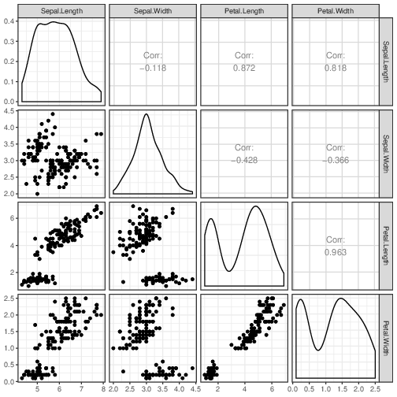
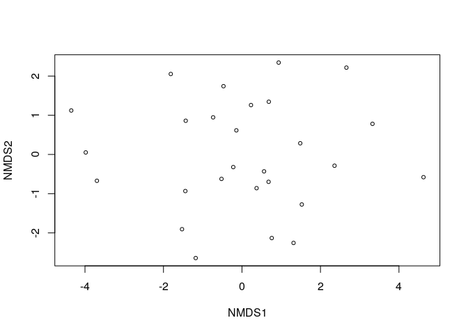

library(factoextra)
library(pheatmap)
library(tidyverse)We usually think of high-dimensional data as consisting of multiple measures on a group of samples:
Many scientists traditionally think of high-dimensional data as having parallel, continuous measures:
These may be complemented by a smaller number of “metadata” variables, which may be more diverse in type (count, categorical, etc.):
More and more datasets don’t follow this:
We study the rows (samples) using the columns (measures)
But we can also do the opposite!
What does differential success of athletes tell us about the relationship between events?
print(names(decathlon2))
## [1] "X100m" "Long.jump" "Shot.put" "High.jump"
## [5] "X400m" "X110m.hurdle" "Discus" "Pole.vault"
## [9] "Javeline" "X1500m" "Rank" "Points"
## [13] "Competition"dec_frame <- (decathlon2[1:10]
%>% rename_all(sub, pattern="^X", replacement="Run_")
%>% mutate_at(vars(contains('Run_')), funs(-.))
%>% rename_all(sub, pattern="110m.", replacement="")
%>% mutate_all(scale)
)
## Warning: funs() is soft deprecated as of dplyr 0.8.0
## Please use a list of either functions or lambdas:
##
## # Simple named list:
## list(mean = mean, median = median)
##
## # Auto named with `tibble::lst()`:
## tibble::lst(mean, median)
##
## # Using lambdas
## list(~ mean(., trim = .2), ~ median(., na.rm = TRUE))
## This warning is displayed once per session. * Slow, and not very good for more than 5 or 6 variables * Base R may be faster for quick viz
dec_mat <- as.matrix(dec_frame)
heatmap(dec_mat)
heatmap(t(dec_mat))pheatmap(cor(dec_mat), cell.width = 10, cell.height = 10)
Better for visualizing groups of events
pheatmap(cor(t(dec_mat)), cell.width = 4, cell.height = 4)Better for visualizing groups of events
A beautiful decomposition based on the idea that data points are points in a Euclidean space
We can think about the PCA as a decomposition (making observed points from idealized points)
Or we can think about it as minimizing distances:
View loadings:
pca_ath <- prcomp(dec_mat, scale=TRUE)
fviz_screeplot(pca_ath)
fviz_pca_ind(pca_ath)fviz_pca_var(pca_ath)
fviz_pca_var(pca_ath, axes=c(2, 3))View scores and loadings:
fviz_pca_biplot(pca_ath)
library(vegan)
## Loading required package: permute
## Loading required package: lattice
## This is vegan 2.5-6
mds <- metaMDS(dec_mat, distance="euclidean")
## 'comm' has negative data: 'autotransform', 'noshare' and 'wascores' set to FALSE
## Run 0 stress 0.175356
## Run 1 stress 0.1788136
## Run 2 stress 0.175356
## ... Procrustes: rmse 4.199628e-05 max resid 0.0001393724
## ... Similar to previous best
## Run 3 stress 0.1754593
## ... Procrustes: rmse 0.02195756 max resid 0.07909403
## Run 4 stress 0.1757427
## ... Procrustes: rmse 0.00834928 max resid 0.03170723
## Run 5 stress 0.2939862
## Run 6 stress 0.1757427
## ... Procrustes: rmse 0.008357441 max resid 0.03174303
## Run 7 stress 0.2032167
## Run 8 stress 0.2751468
## Run 9 stress 0.175356
## ... Procrustes: rmse 5.939411e-05 max resid 0.0001985773
## ... Similar to previous best
## Run 10 stress 0.2028367
## Run 11 stress 0.2045572
## Run 12 stress 0.2008871
## Run 13 stress 0.2829533
## Run 14 stress 0.2050859
## Run 15 stress 0.2050859
## Run 16 stress 0.1783896
## Run 17 stress 0.1754595
## ... Procrustes: rmse 0.02223175 max resid 0.07980905
## Run 18 stress 0.2146018
## Run 19 stress 0.1787376
## Run 20 stress 0.175356
## ... Procrustes: rmse 3.008194e-06 max resid 6.454376e-06
## ... Similar to previous best
## *** Solution reached
plot(mds)
## species scores not available
print(scores(mds))
## NMDS1 NMDS2
## 1 -0.5216793 -0.62341748
## 2 -1.1789596 -2.64143567
## 3 1.5244483 -1.27562651
## 4 0.9351417 2.34291516
## 5 0.2298949 1.25947043
## 6 -0.7348909 0.94626213
## 7 2.6611695 2.21451458
## 8 2.3583813 -0.28715276
## 9 1.4849254 0.28560888
## 10 3.3259036 0.78088407
## 11 4.6251675 -0.57956959
## 12 -3.9805059 0.05178841
## 13 -3.6958724 -0.67114345
## 14 -4.3497728 1.12145580
## 15 -1.8142574 2.05225829
## 16 -1.4429019 -0.93301201
## 17 -0.4707048 1.74131060
## 18 -0.1431211 0.61501051
## 19 -1.4332552 0.85977533
## 20 0.6779905 -0.69777531
## 21 -0.2215424 -0.32220831
## 22 0.5627001 -0.43100980
## 23 0.6839564 1.34459164
## 24 -1.5274034 -1.90609679
## 25 0.3721861 -0.85945466
## 26 0.7588504 -2.13184500
## 27 1.3141512 -2.25609851library(vegan)